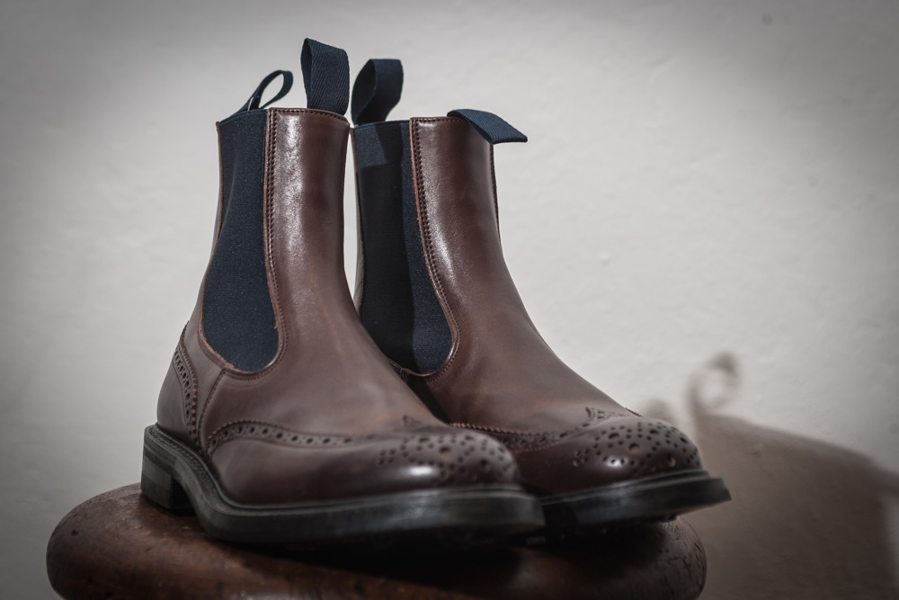
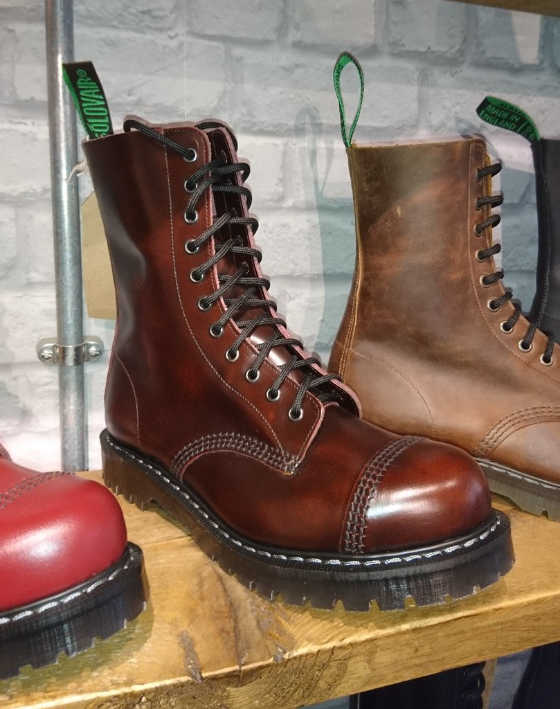

What is leather?
Leather is the byproduct of different animal products as well as the meat industry.
The levels of leather make up different types of leather seen on shoes.
These include suede and full grain options.
The three types covered today are going to be Suede, full grain, and corrected grain leathers.

This diagram shows the different types of leather products produced by a hide of leather.
Typically if you see a tag with "genuine leather" on a pair of shoes that is usually a sign of poor quality.
In the USA, what qualifies as "genuine leather" is typically left over leather bits molded together and glued.
As a whole you typically want products that show either what tannery they originate from, or their leather type.
What types of leather should I look for?
Leather comes in many different shapes and sizes. The types of leather available is endless,
Either from the different animals available or exotic animals as well.
Full-grain leather is simply the name given to most leathers that are used which use the top chunk of leather
which has the most tensile strength.
A large appeal to full-grain leather is the lack of uniformity. Often you can see the scars and imperfections
present on most top-grain leather footwear.
One of the more coveted types of full-grain leathers available is calfskin. In this example we have boxcalf.

Calfskin is considered a very high-end leather type which is known for its resilience,
as well as its ability to attain a very attractive patina.
The next type of leather product is suede. Suede is a type of felted leather that is often used on dressier
shoes and boots.
Suede is a fiberous material that while less water resistant and more fragile than full-grain, has it's own
level of nicheness,
which gives most suede a richness as well as unique patina patterns.


These two images show how suede develops a patina as well as variety of colors that normal suede can come in.

This pair of Solovair boots are corrected leather. This means that this pair is made up of top grain leathers
that aren't
as desirable or may have been more scarred. This is also done to create a uniform look in the leather, but
also decreases
the longevity of the boot as well as lowering its appeal amongst most leather aficionados.
While there is nothing wrong with corrected grain, you are sacrificing the patina and uniqueness that comes
with traditional top grain.
How should I take care of my footwear?
I'm glad you asked! there is a myriad of ways in which you could take care of your footwear, while there is no
"one" option available,
However, there are some general guidelines to what works for your footwear based on formality and how the
leather is tanned.
On the more formal end of footwear, things like Saphir's Renovator
and their Pate De
Lux line of wax are essential for
creating a nice shine to the shoe or boot as well as increasing its durability and water resistance.
On more rugged shoes or boots
waxes or oils work best. The strongest of these tend to be Mink oil
and most waxes that the company of your chosen boot likes most.
What do I need to take care of my shoes?

While owning a good pair of GYW footwear can be quite exciting, it is important that you take care of your
investments from time to time.
This means have the right tools for the job. As a new owner of GYW footwear it is important you have a solid
understanding of what each
item works as well as what it is doing to your leather. When you get your first pair of GYW shoes the most
important tool at your disposal is
a good shoe brush. Horsehair is the most preferred type of shoe brush, but most work well. Next you'll need conditioner as well as a good wax polish.
I have the products, now what?
Now that you have an idea of what everything does, we can start with our guide on how to take care of your
investments.
Our Guide starts off with a good brushing of your pair of footwear.
From here you apply your choice of conditioner to the shoe and allow it 10 mins or so to dry.
Once the conditioner is dried, you can brush it all off for a dull sheen. Once you've achieved your sheen you'll
be able to apply your choice of wax polish.
There are a myriad of ways to do this, either using fire to melt the wax onto the shoe, water to add a mirror
shine, or simply appling the wax without any added methods.
Once you've applied your wax you can either use a shammy to give it a high shine, or use a brush to add a more
glossy texture to the shoe. Once you've done this,
you can repeat this process 2-3 times for more protection from the elements as well as increasing the shine on
the shoe. Once you have finished waxing,
you can give the shoe a final brushing and you'll have finished taking care of your investments.